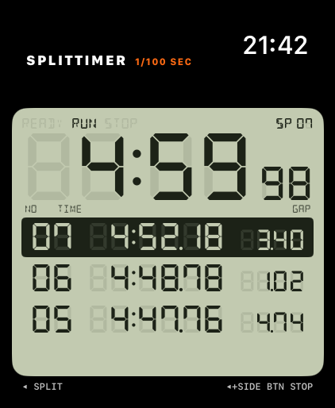
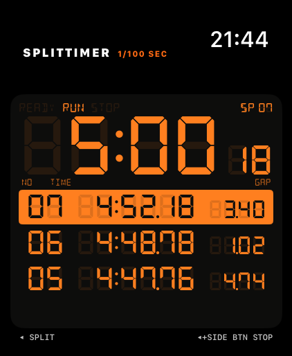
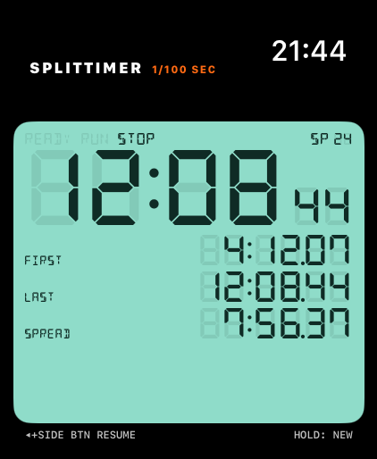

Time a whole group with one start.
Group stopwatch for Apple Watch
Start once. Every tap, or every press of the Action Button on Apple Watch Ultra, records the total time since the start as a numbered split. Ten runners finish? Ten presses. No names to type, no iPhone needed.




How it works
- StartPress the Action Button on Apple Watch Ultra, or tap the screen on any Apple Watch. The clock runs in hundredths of a second.
- SplitEvery tap or Action Button press records the total time as a numbered split, with the gap to the previous finisher. Keep your eyes on the finish line.
- Stop and exportHold the screen (or Action Button + side button) to stop. See first, last and spread, then export the session as CSV.
Set up the Action Button
On Apple Watch Ultra, assign the Action Button to SplitTimer once:
Settings › Action Button › Workout › SplitTimerChoose the Group Timer workout. The first press starts the clock, every next press is a split. Action Button + side button stops and resumes; the stopped time is left out. If it does not start, open SplitTimer once and allow the Health permission for workouts. watchOS only hands the Action Button to an app that has it.
On any other Apple Watch
Tap anywhere on the display for a split. Double tap works on Series 9 and later and Ultra 2 and later. Hold one second to stop.
Who it is for
- Athletics trainers and club coaches timing a group
- PE teachers: cross country, Cooper test, 1,000 m or mile
- School sports days and fun runs
- Anyone who times more than one person at a time
Private by design
No account, no server, no tracking. Your sessions stay on your watch. While timing, SplitTimer runs a workout session so the app stays on screen and the Action Button keeps working; a finished session is saved to Health only if you turn that on, and then with nothing but its duration. Read the privacy policy
Compatibility and price
- Platform
- Apple Watch only (watchOS 11 or later). No iPhone app.
- Action Button
- Apple Watch Ultra
- Tap and double tap
- Any supported Apple Watch (double tap: Series 9 and later, Ultra 2 and later)
- Languages
- 8
- Look
- Retro LCD, three themes
- Price
- €2.99 (local price may differ), one-time
Frequently asked questions
The Action Button doesn't start SplitTimer.
Open SplitTimer once and allow the Health permission (workouts). Without it, watchOS won't hand the Action Button to the app. Check Settings › Health › Apps › SplitTimer.
Why does SplitTimer start a workout?
On Apple Watch Ultra, apps can only use the Action Button through a workout. The workout keeps the clock on screen. Nothing is saved to Health unless you turn on "Save as workout in Health" in the app's settings.
Can I resume after stopping by accident?
Yes: press Action Button + side button again. On other models, hold the screen again and choose Keep counting. The stopped time is left out, like a regular stopwatch.
Where are my sessions?
On your watch only. Swipe left to the sessions page; tap a session to export it as CSV.
Support and contact
Questions, ideas or a problem? Write to barthak32@gmail.com. I read every message.